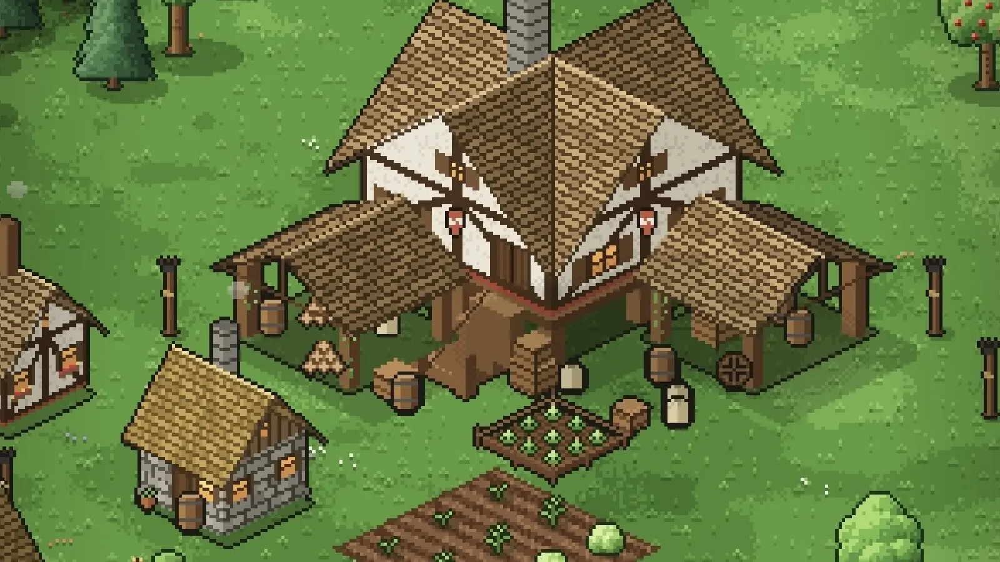
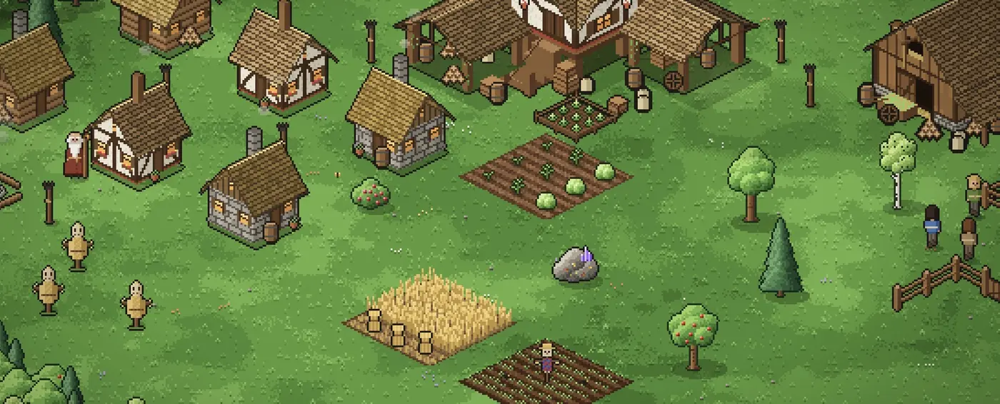
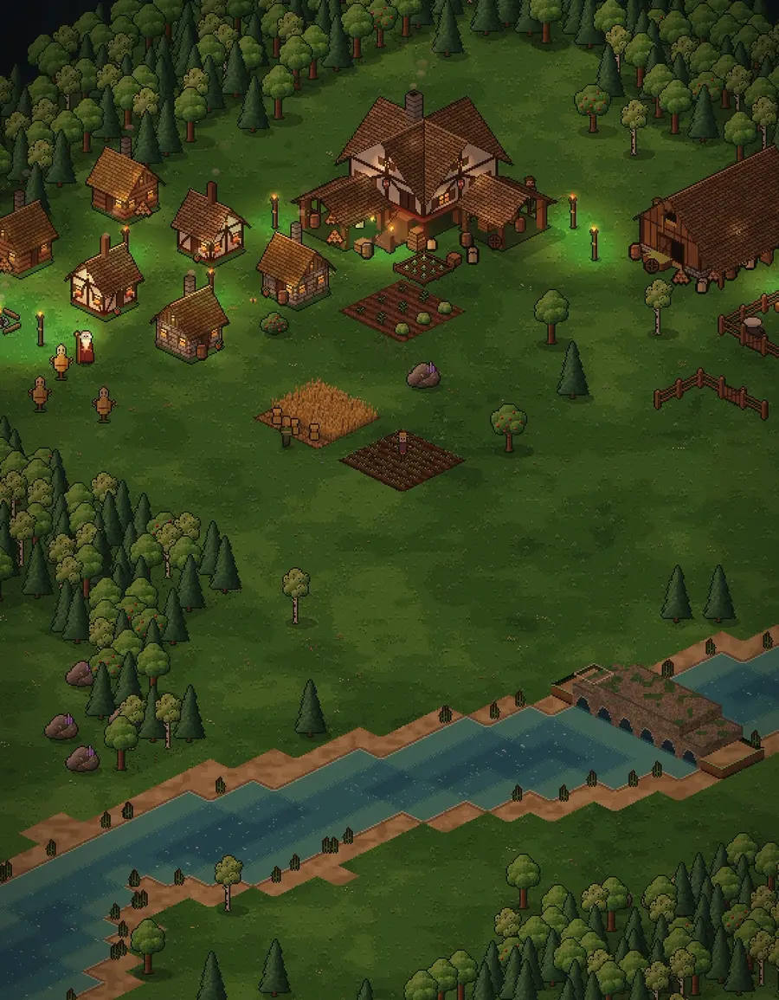
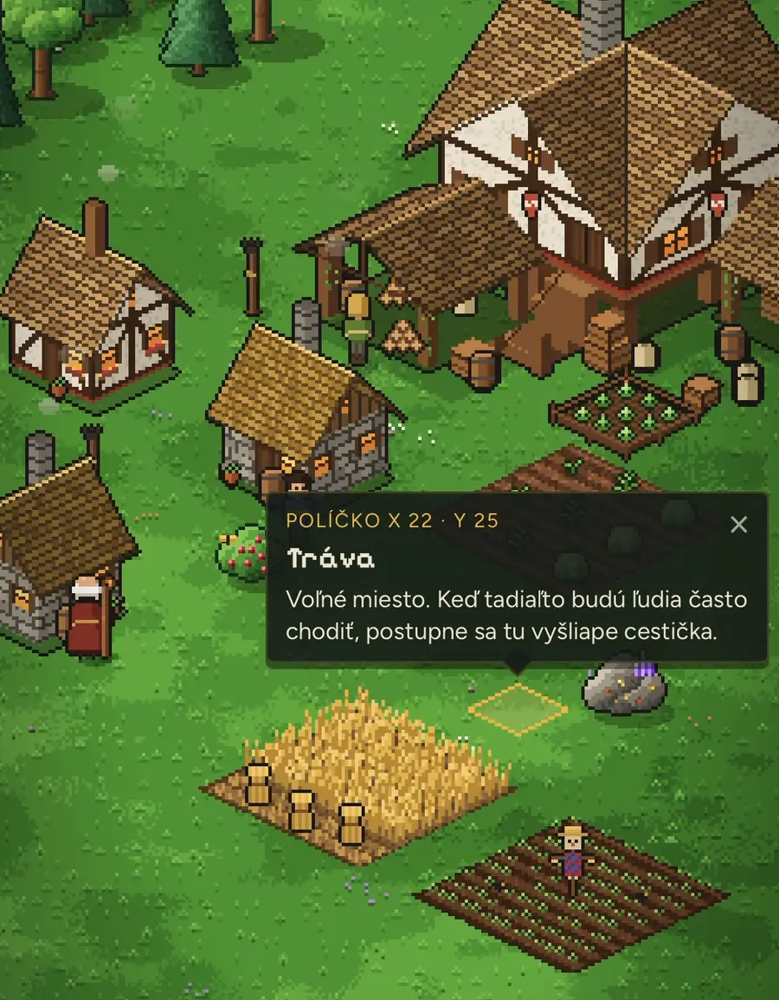
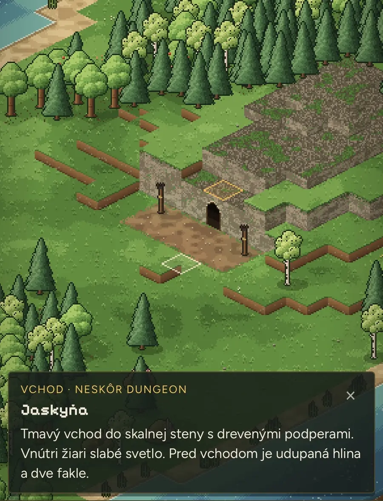

Blog ·
Nikdy som nebol programátor. Teraz si s AI stavam vlastnú hru.
Vždy som chcel mať vlastnú hru a mal som na ňu milión nápadov. Konečne prišiel čas ich zužitkovať. Hra sa volá Usage of Empires a staviam ju len cez AI. Tu je, ako vznikla, čo v nej je a čo v nej nikdy nebude.

Som bývalý drtič počítačových hier. Age of Empires patrí medzi moje nostalgické lásky. Programovať som sa nikdy nenaučil, no vlastnú hru som chcel odmalička. Nápadov som mal vždy milión a vždy mi chýbalo to, čo ich zmení na hru.
Dnes to riešim s AI. Poviem jej, čo chcem, ona napíše kód a ja sa pozriem, čo z toho vyšlo. Ak sa mi to nepáči, poviem to inak. Programátor v tom nie som, ale rozhodujem ja.
Jedna hra, milión názvov
Táto hra nebola prvý nápad. Pred ňou som mal milión rôznych formátov, názvov a mechaník. Všetko to bolo o jednom: chcel som hru, ktorá je dlhodobá.
Niečo by sa v nej stavalo. Mala by viac mechaník, vďaka ktorým by sa hráč rád vracal. A hlavne, hra by žila aj bez neho. Dedina by fungovala ďalej, aj keď nie si pripojený. Bolo by to niečo medzi digitálnym akváriom, tamagoči a budovaním civilizácie.
Prvá chyba: jeden obrovský prompt
Keď som začínal s takýmito hrami, dal som AI jeden veľký prompt s celým nápadom. Dostal som niečo, čo vyzeralo ako hra. Lenže potom sa to takmer nedalo upravovať, lebo všetko stálo na jednom veľkom základe.
Tak som to otočil. Teraz hru staviam od začiatku, po malých krokoch:
- zelená tráva
- jedna postavička
- domček
- potom som si vytvoril „Dev World“, testovací svet, kde skúšam veci
- do neho som pridával ďalšie mechaniky a rozširoval svet
- nočný režim
- vychodené chodníčky
Dnes to funguje takto: každý krok je malý a vidím ho na vlastnom telefóne. Keď sa niečo pokazí, viem presne, ktorý krok to bol.
Prečo Usage of Empires
Názov je vtip. Je to memečko o AI usage limitoch (o tom, ako rýchlo sa vyčerpá tvoj limit na AI) a Age of Empires. Hra sa volala Dev World, kým som ju nepremenoval.
Funguje na telefóne aj na počítači, beží v prehliadači v jednom súbore. Je to zatiaľ iba beta, demo verzia. Nie je na serveri a nedá sa ešte hrať online.

Čo už hra vie
Je to pokojná izometrická hra v štýle Age of Empires. Stavaš osadu, osadníci ťažia a nosia suroviny a ty ovládaš strážcu ohňa, ktorý chodí do jaskyne.
- Dva režimy. Ako Mesto staviaš a zadávaš úlohy. Ako Hrdina ovládaš postavu s joystickom a tlačidlami.
- Cestičky sa vychodia samy. Pozri nižšie, ako to vzniklo.
- Duch osady. Je to niečo ako úroveň pohodlia v meste. Fakle, ohnisko, domy a opravený most ju zvyšujú a osadníci pracujú rýchlejšie. Hráča to netrestá, len odmeňuje. Názov ešte premenujem.
- Skrýša pod hlavnou budovou. Je to sklad zberateľských vecí. Hráč do nej dáva veci, ktoré nájde pri ťažbe, v dungeonoch a neskôr pri rôznych udalostiach v hre.
- Jaskyňa. Otvorí sa, keď opravíš prvý most. Je to zatiaľ prvý dungeon, ďalších bude oveľa viac. Mená príšer (slizy, chrobáky) sú zatiaľ pracovné.
- Výbava (loadout). Štyri sloty, ktoré menia spôsob hrania. Možno ich ešte rozšírim.
- Kino režim. Zmizne celé rozhranie a kamera sa pomaly prechádza po dedine. Toto je moje digitálne akvárko: pustíš si to doma na televízore a pozeráš, ako ti dedinka žije, ľudia chodia, jazdia, zbierajú a stavajú.



Čo v hre nebude
- Žiadne PvP. Nič, čo by hráčovi ničilo to, čo si postavil.
- Žiadne nájazdy, ktoré zničia dedinu. PvE v hre bude, napríklad dungeony a rôzne iné lokality, ale nikdy nie na úkor toho, čo máš doma.
- žiadna stamina, žiadne kazenie jedla a žiadny pay-to-win
- nepridávať funkcie, ktoré sa nebudú používať
Chcem hru, do ktorej sa dá večer sadnúť bez stresu a kde dedina nikdy nezhorí, keď si preč.
Ako sme sa rozhodovali
Dohoda s AI je jednoduchá. Technické veci rozhoduje Claude. Pri hernom a kreatívnom ma pýta. Nemusím rozumieť kódu, ale o hre rozhodujem ja.
Cesty kreslí hra sama, a to bol môj nápad. AI mi navrhla, že cesty bude stavať hráč ručne. Povedal som nie. Chcel som, aby ľudia v dedine chodili po tráve a vychodili si cestičky sami. Dodáva to hre atmosféru a hráča to ušetrí od ručného kreslenia.
Výbava mení hranie, nie čísla. Fénixova palica napríklad každú tretiu ohnivú guľu vystrelí trojmo. Kamenná zbroj dá viac života, ale spomalí ťa. Nechcel som veci typu „+5 % niečoho“.
Pamäť hry. Po každom kroku sa aktualizuje súbor s poznámkami o hre, ktorý AI číta pri novom rozhovore. Bez neho by zabudla, čo sme sa dohodli.
Research od Gemini
Keď som mal prvú verziu, nechal som Gemini spraviť výskum: čo hráči v podobných hrách chvália a čo neznášajú (Stardew Valley, Cult of the Lamb, Animal Crossing a ďalšie). Gemini čerpá hlavne z diskusií na Reddite, takže beriem to ako inšpiráciu, nie ako vedeckú štúdiu.
Z výskumu vyšla jedna jasná lekcia: hráči neznášajú únavné klikanie a ručnú robotu bez konca. Preto majú osadníci fungovať sami a suroviny sa berú zo spoločného skladu.
Ďalšie nápady z výskumu si nechávam na neskôr a nebudem ich tu rozoberať.
Čo ešte nie je hotové
- Ukladanie hry. Zatiaľ ho nemám vyriešené, ideme len na demoverzii.
- Ďalšie dungeony a lokality
- Nové názvy pre Ducha osady a príšery
- Angličtina, úplne na koniec
Na čom to stojí
Jedno z toho, čo som sa naučil: pomáha mať hru rozdelenú na malé kroky a poznámky, ktoré AI nezabudne. Zvyšok je kreativita, a tej mám, našťastie, dosť.
Chceš si niečo také vyskúšať sám? Na 3-hodinovej session ťa to naučím na tvojich vlastných veciach.
15 min hovor zadarmo